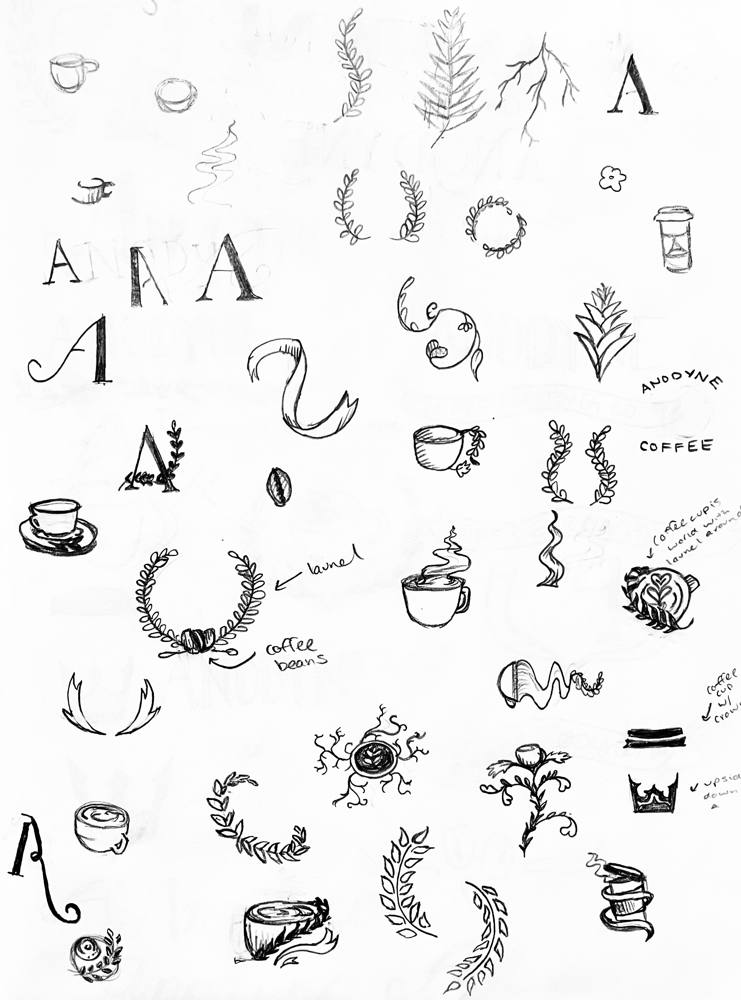
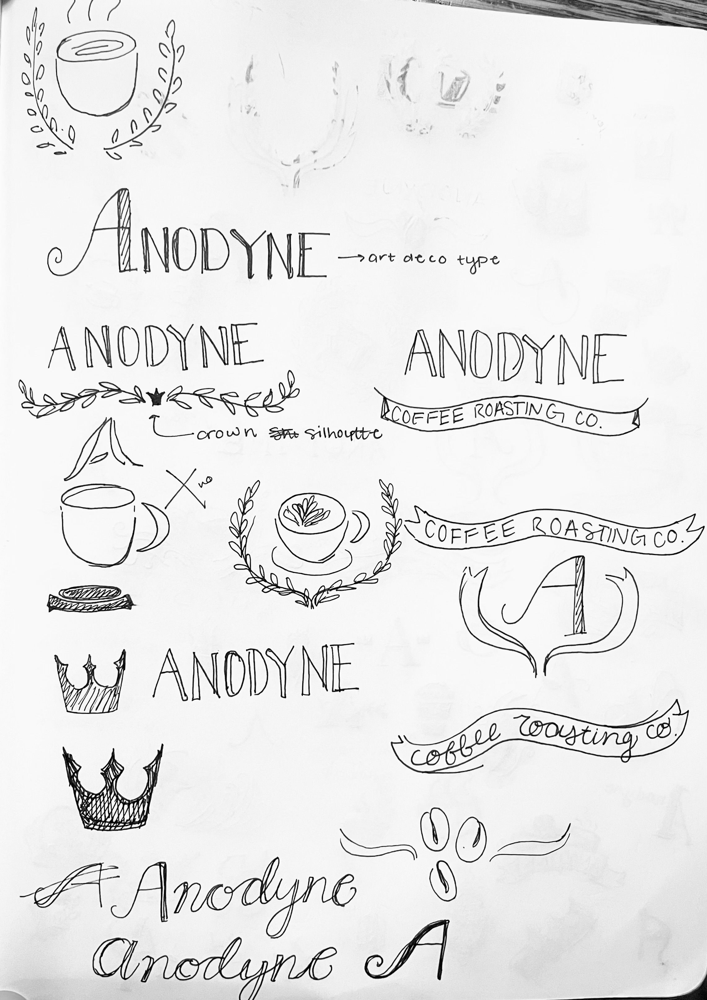
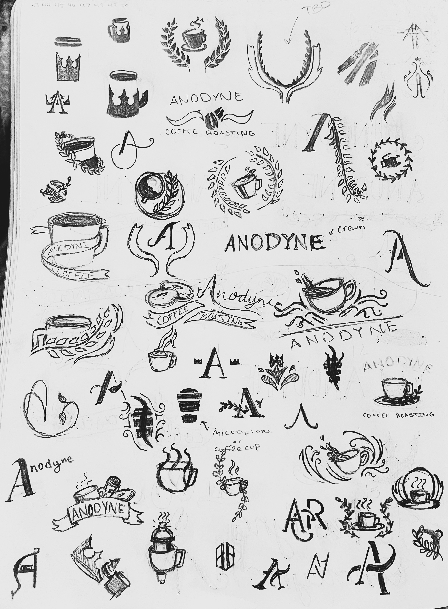

Logo Sketches

These are initial sketches from when the beginning ideas were being created. These thumbnails were quick with little attention to true detail.

These were from an exercise where a partner would use the original sketch ideas to try to come up with other ideas. These were from the partner I had.

These were more detailed versions of sketches but these sketches have a more centralized idea behind them.